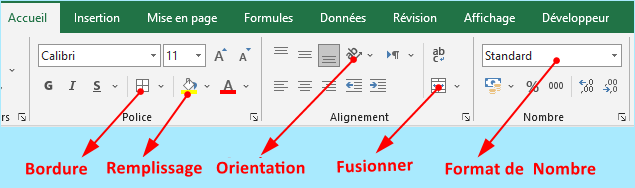
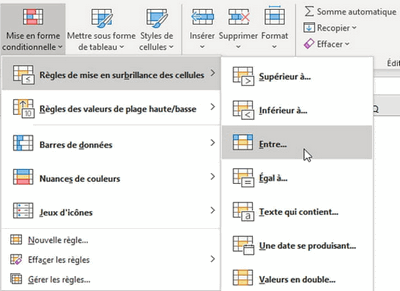
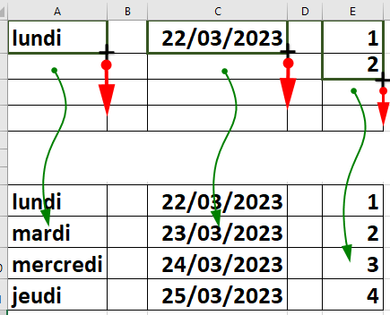

IV) Mise en forme des cellules:
1. Format des cellules

✔ Sélectionnez une ou plusieurs cellules
✔ sur l’onglet «Accuil», choisissez la (ou les) forme(s) désirée(s).
Remarque :
Les autres formes sont également disponibles dans une boite de dialogue qui s’ouvre en cliquant sur les flèches en bas à droite des groupes « Police », « alignement » et « nombre »
2. Mise en forme conditionnelle

✔ Sélectionnez la ou les cellules auxquelles doit s'appliquer la mise en forme conditionnelle
✔ Dans le groupe «Styles» de l’onglet «Accuil», cliquez sur «Mise en forme conditionnelle»
✔ Sélectionnez «Règles de mise en surbrillance des cellules»
✔ Choisissez la Règle de mise en surbrillance que vous souhaitez appliquer
Remarque :
Vous pouvez aussi appliquer les formes conditionnelles suivantes :
• Barre de données : pour remplir de couleurs les cellules en fonction de leur valeur chiffrée.
• Règles des valeurs de plage haute/basse : pour mettre en évidence les valeurs les plus hautes/basses.
• Nuances de couleur : pour faire ressortir un pattern.
• Jeux d'icônes :Pour représenter visuellement les données avec des icônes
3. Recopier le contenu d’une cellule
Pour accélérer votre saisie, vous pouvez recopier le contenu et le format d’une cellule vers une ou plusieurs cellules situées vers le bas, la droite, le haut ou la gauche de celle-ci.
Exemple : pour recopier le contenu d'une cellule vers les cellules se trouvant en bas:
✔ Cliquez sur la cellule à recopier, puis sur«la poignée de recopie»
✔ Sans relâcher le bouton gauche, glissez et déplacez la souris vers le bas
La recopie incrémentée :
L’utilisation de la poignée de recopie permet également de créer des listes incrémentées. Par exemple, les jours de la semaine, les dates, les séries de nombres ...
Exemple:
